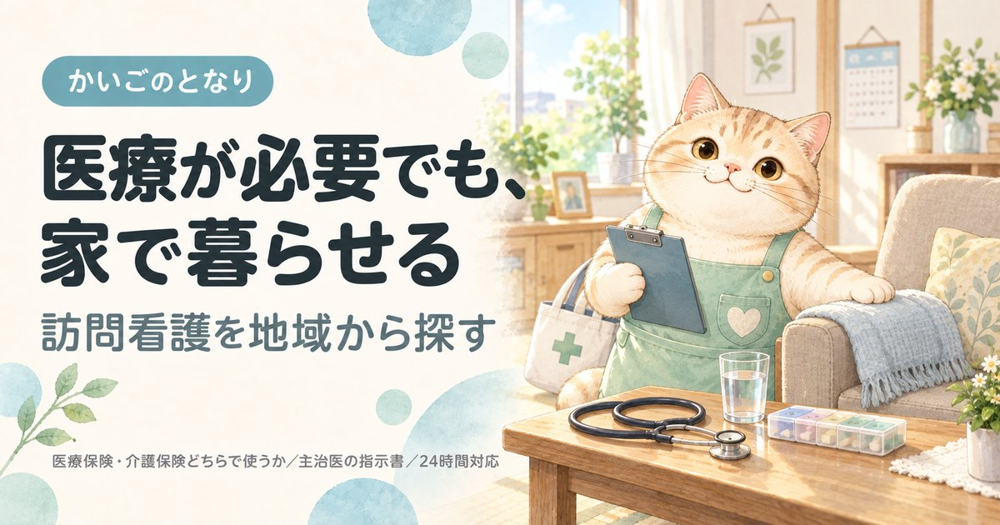

杉並区の訪問看護ステーション一覧｜選び方と始め方

東京都杉並区で訪問看護を探している方へ。区内にある73件のステーションから60件を連絡先つきで掲載し、そのうち日曜日も定期訪問があるのは17件であることまで示しました。主治医の指示書から利用開始までの流れもまとめています。訪問看護は事業所選びより先に主治医への相談が要ります。
目次
数字で見る杉並区の訪問看護
- 区内の事業所
- 73件23区中7位（多い順）
- 65歳以上1万人あたり
- 6.0件23区中16位（多い順）
- 高齢化率
- 20.9%23区中9位（高い順）
- 要介護・要支援の認定
- 26,455人65歳以上の21.5%
事業所数は東京都福祉局の指定事業所一覧（2026年9月1日時点）、人口は住民基本台帳（2026年1月1日時点）から計算。区の統計をくわしく見る
杉並区で訪問看護を探すとき、最初に押さえること
杉並区には訪問看護ステーションが約73件あります。区内の数が多い一方、対応できる医療処置はステーションごとに違います。訪問介護と違い、事業所選びより先に主治医の指示書が要ります。相談の順番を間違えると、ここで止まります。
①主治医（かかりつけ医・入院先）に「自宅で訪問看護を使いたい」と伝える → ②ステーションを決める → ③主治医が訪問看護指示書を出す → ④契約・初回訪問。入院中なら、退院支援・地域連携の窓口に相談するのが最短です。
杉並区の相談窓口はケア24（区内20か所）です。杉並区では地域包括支援センターを「ケア24」と呼び、区内各地に設置しています。主治医が決まっていない場合や、どのステーションがよいか分からない場合は、まずここで相談できます。
医療保険と介護保険のどちらになるか、回数と時間の上限、訪問介護との違いは訪問看護を地域から探すにまとめています。杉並区に限らず全国共通の内容です。
杉並区の訪問看護ステーション一覧
杉並区内の訪問看護ステーションから60件を掲載しています（東京都公表・2026年9月1日時点）。区内には73件が指定を受けており、事業所番号の順に等間隔で抽出したため、開設の古い事業所と新しい事業所が混ざっています。掲載順は事業所の優劣を示すものではありません。
60 / 60件を表示
「場所」は事務所の所在地です。訪問サービスは近くの町からも来てもらえます。
提供曜日の記載がない5件は、曜日で絞ると表示されません。
1訪問看護ステーション ｃｏ－ｃｏ－ｒｏ
上荻3-26-14ドミトリー上荻Ⅱ202一般社団法人産前産後ケア推進協会
事業所番号 1361390261
2ローズ訪問看護ステーション
高円寺南2-46-16第8シュヴェルニー101号室株式会社ライフサイクロペディア
事業所番号 1361590027
3訪問看護ステーション ＨＵＧ はぐ
高円寺南4-45-4高円寺南サマリアマンション704ケアプロ在宅医療株式会社
事業所番号 1361590043
4あおい訪問看護ステーション
高井戸東3-17-18合同会社Ｙ＆Ｕケア芙蓉会
事業所番号 1361590100
7りんご訪問看護ステーション
今川2-24-1カリフール今川1号棟104株式会社シナプス
事業所番号 1361590167
8ケィズリハビリ訪問看護ステーション
上荻1-18-16亀屋酒販第1ビル501号株式会社ケィズコネクションズ
事業所番号 1361590217
9ガイア訪問看護ステーション 荻窪
荻窪4-31-11アクアレール201株式会社ガイアメディケア
事業所番号 1361590258
10メディケアーズ訪問看護リハビリステーション高井戸
高井戸西2-10-7新川ビル2F-2株式会社ＨＰＭ
事業所番号 1361590266
12プライム訪問看護リハビリステーション
荻窪5-11-22榎本ビル4F日本総合福祉会株式会社
事業所番号 1361590290
13エフリオ訪問看護ステーション
阿佐谷北2-14-5大阪やビル1階エフリオ株式会社
事業所番号 1361590316
14リハラボ訪問看護リハビリステーション
和田3-31-15パイロットハウス101株式会社ＲｅｈａＬａｂｏＪａｐａｎ
事業所番号 1361590357
15スギコー訪問看護ステーション
高井戸東3-18-7杉交第2ビル201・202スギコー株式会社
事業所番号 1361590407
16ののはな訪問看護ステーション
上井草4-24-3株式会社ＪＯＹ
事業所番号 1361590415
17ナーシングケア いおり
堀ノ内2-39-18株式会社Ｓｋｙｈｏｏｋ
事業所番号 1361590423
18トータルライフケア新中野訪問看護ステーション
和田1-29-11株式会社トータルライフケア
事業所番号 1361590456
19訪問看護ステーション ユアネーム
荻窪3-41-19社会福祉法人呉ハレルヤ会
事業所番号 1361590464
20オラロア訪問看護リハビリステーション新高円寺
梅里1-7-17K＆Ⅱビル401やすらぎ株式会社
事業所番号 1361590498
21フローラル訪問看護ステーション
上高井戸1-1-10カメリアガーデン303一般社団法人Ｇｅｎｙ
事業所番号 1361590514
22訪問看護ステーション デューン高円寺
高円寺南4-40-17モンコトー2階株式会社Ｎ・フィールド
事業所番号 1361590522
23ソフィアメディ訪問看護ステーション阿佐ヶ谷
成田東5-40-10ソレイユビル3Fソフィアメディ株式会社
事業所番号 1361590530
24いたる訪問看護ステーション
上荻1-12-1荻窪ビル3階C号室社会福祉法人いたるセンター
事業所番号 1361590548
25ソフィアメディ訪問看護ステーション永福
永福4-6-13アメニティコート470 2階ソフィアメディ株式会社
事業所番号 1361590563
26ソフィアメディ訪問看護ステーション西荻窪
松庵2-13-33VILLA MARRONNIERE 1Fソフィアメディ株式会社
事業所番号 1361590571
27ぱんだ訪問看護リハビリステーション
西荻北2-1-3シャトルマンション102株式会社ＰＡＮＤＡ
事業所番号 1361590589
28ソフィアメディ訪問看護ステーション下井草
下井草2-19-19ソフィアメディ株式会社
事業所番号 1361590605
29ウォームハート訪問看護ステーション
上井草3-17-24株式会社クールヘッド
事業所番号 1361590647
30ホウカンＴＯＫＹＯ
和田3-32-9ハノン・ケアシステム株式会社
事業所番号 1361590654
31野いちご訪問看護ステーション
下井草3-8-5株式会社喜咲
事業所番号 1361590662
32訪問看護ステーション デライト杉並
西荻北2-3-9トラストビル2階株式会社Ｈ＆Ｈホールディングス
事業所番号 1361590688
33ＣＢ訪問看護リハビリステーション井荻
井草4-8-14株式会社Ｍｏｎｓｏｏｋ
事業所番号 1361590696
34アート訪問看護センター
梅里1-21-8一般社団法人カインドネス
事業所番号 1361590720
35ＰＩＥＣＥ訪問看護ステーション
方南1-13-8株式会社ＰＩＥＣＥ
事業所番号 1361590761
36訪問看護ステーション はな 荻窪
荻窪4-11-16ドミシール荻窪101株式会社はな
事業所番号 1361590787
37セントケアＤＸ訪問看護ステーション高円寺
高円寺北4-32-4カーサベルテ301号セントケアＤＸ株式会社
事業所番号 1361590803
38Ｎａｎａ訪問看護ステーション下井草
下井草1-27-3トリコロール3号室日本訪問看護株式会社
事業所番号 1361590829
40グラン訪問看護ＴＯＫＹＯ
上井草1-22-17浅賀マンション210号室株式会社グラン訪問看護ＴＯＫＹＯ
事業所番号 1361590845
41セントケアＤＸ訪問看護ステーション堀ノ内
堀ノ内1-10-2堀ノ内GALAXY 4AセントケアＤＸ株式会社
事業所番号 1361590852
42トータルライフケア杉並訪問看護ステーション
清水3-31-10yashimaビル2F株式会社トータルライフケア
事業所番号 1361590860
45ぴゅあ訪問看護リハビリステーション高円寺
高円寺南4-27-7ラインビルド高円寺・林403号室株式会社ｈａｌｋａ
事業所番号 1361590928
47杉並ふくろう訪問看護リハビリステーション
和泉3-41-6株式会社Ｋ＆Ｎ－ＮＥＸＴ
事業所番号 1361590951
48ソラーナ訪問看護ステーション
下井草4-32-17第二陵雲閣304号室株式会社ＳｏｌａｎａＭｅｄｉｃｓ
事業所番号 1361590985
50ハートリハ訪問看護ステーション久我山
久我山2-16-19メゾンドフローラ103株式会社ハートリハ
事業所番号 1361591009
52訪問看護ステーション ドルチェ
和泉1-3-1BSビル2階医療法人社団ラルゴ
事業所番号 1361591041
53訪問看護ステーション悠楽々東京
久我山4-2-25ミモザビル2F株式会社ワイグッドナーシング
事業所番号 1361591058
54河北訪問看護・リハビリステーション阿佐谷
阿佐谷南1-16-8ISM ASAGAYA6階社会医療法人河北医療財団
事業所番号 1367191232
55医療法人社団 野﨑クリニック 野﨑クリニック訪問看護ステーション
阿佐谷南3-37-13大同ビル2階医療法人社団野﨑クリニック
事業所番号 1367191794
56社会医療法人社団 健友会 西荻南訪問看護ステーション
西荻南4-2-7西荻窪診療所2階社会医療法人社団健友会
事業所番号 1367192693
57荻窪病院訪問看護ステーション
今川2-5-7サニーヒルズ荻窪301号医療法人財団荻窪病院
事業所番号 1367193337
58杉並区医師会訪問看護ステーション
天沼3-19-14フェニックス杉並1F一般社団法人杉並区医師会
事業所番号 1367193600
59訪問看護ステーション ほたるすぎなみ
上井草1-22-17-107株式会社ジェネラス
事業所番号 1367197403
60越川病院訪問看護ステーション
上井草4-5-27 2階医療法人社団杏順会
事業所番号 1367197916
条件に合う事業所はありません。条件を1つ外してみてください。
上記60件は、2026-09-21に杉並区および各事業者の公表情報で確認した内容です。営業時間・対応エリア・空き状況は変動しますので、連絡の前に必ず公式情報をご確認ください。掲載内容の訂正・削除は、お問い合わせからご依頼いただければ理由の説明なしで削除します。
掲載60事業所の内訳
杉並区内で掲載している60事業所を、所在地・運営法人・開設年数・サービス提供日の4つの軸で集計しました。事業所ごとの詳細は上の一覧をご覧ください。
所在町域
訪問看護も、ステーションから通える範囲が実質的な対応エリアになります。杉並区内は36の町域に分かれています。緊急時にどれだけ早く来られるかは距離に左右されるため、自宅に近い町域から当たるのが確実です。
| 町域 | 掲載事業所 |
|---|---|
| 上井草 | ののはな訪問看護ステーション、ウォームハート訪問看護ステーション、グラン訪問看護ＴＯＫＹＯ、ゆり訪問看護ステーション、訪問看護ステーション ほたるすぎなみ、越川病院訪問看護ステーション |
| 上荻 | 訪問看護ステーション ｃｏ－ｃｏ－ｒｏ、ケィズリハビリ訪問看護ステーション、訪問看護ステーションみのり、いたる訪問看護ステーション |
| 下井草 | ソフィアメディ訪問看護ステーション下井草、野いちご訪問看護ステーション、Ｎａｎａ訪問看護ステーション下井草、ソラーナ訪問看護ステーション |
| 荻窪 | ガイア訪問看護ステーション 荻窪、プライム訪問看護リハビリステーション、訪問看護ステーション ユアネーム、訪問看護ステーション はな 荻窪 |
| 高円寺南 | ローズ訪問看護ステーション、訪問看護ステーション ＨＵＧ はぐ、訪問看護ステーション デューン高円寺、ぴゅあ訪問看護リハビリステーション高円寺 |
| 久我山 | セコム訪問看護ステーションくがやま、ハートリハ訪問看護ステーション久我山、訪問看護ステーション悠楽々東京 |
| 和田 | リハラボ訪問看護リハビリステーション、トータルライフケア新中野訪問看護ステーション、ホウカンＴＯＫＹＯ |
| 松庵 | ソフィアメディ訪問看護ステーション西荻窪、医心館 訪問看護ステーション 西荻窪、訪問看護ファミリー・ホスピス００２ |
| 今川 | りんご訪問看護ステーション、荻窪病院訪問看護ステーション |
| 和泉 | 杉並ふくろう訪問看護リハビリステーション、訪問看護ステーション ドルチェ |
| 堀ノ内 | ナーシングケア いおり、セントケアＤＸ訪問看護ステーション堀ノ内 |
| 方南 | ＰＩＥＣＥ訪問看護ステーション、訪問看護ステーション コルディアーレ杉並 |
| 梅里 | オラロア訪問看護リハビリステーション新高円寺、アート訪問看護センター |
| 永福 | ソフィアメディ訪問看護ステーション永福、医心館 訪問看護ステーション 西永福 |
| 西荻北 | ぱんだ訪問看護リハビリステーション、訪問看護ステーション デライト杉並 |
| 西荻南 | 笑生訪問看護ステーション、社会医療法人社団 健友会 西荻南訪問看護ステーション |
| 阿佐谷北 | エフリオ訪問看護ステーション、ツクイ杉並訪問看護ステーション |
| 阿佐谷南 | 河北訪問看護・リハビリステーション阿佐谷、医療法人社団 野﨑クリニック 野﨑クリニック訪問看護ステーション |
| 高井戸東 | あおい訪問看護ステーション、スギコー訪問看護ステーション |
| 上高井戸 | フローラル訪問看護ステーション |
| 井草 | ＣＢ訪問看護リハビリステーション井荻 |
| 天沼 | 杉並区医師会訪問看護ステーション |
| 成田東 | ソフィアメディ訪問看護ステーション阿佐ヶ谷 |
| 清水 | トータルライフケア杉並訪問看護ステーション |
| 高井戸西 | メディケアーズ訪問看護リハビリステーション高井戸 |
| 高円寺北 | セントケアＤＸ訪問看護ステーション高円寺 |
運営法人の種別
掲載60件のうち営利法人が48件と最も多く、母体が医療機関である医療法人は6件です。訪問看護では、母体が医療機関かどうかで主治医との連携のしやすさが変わることがあります。
| 法人の種別 | 件数 | 傾向 |
|---|---|---|
| 営利法人 | 48件 | 株式会社・有限会社など。住宅街の中の小規模な事業所が多い |
| 医療法人 | 6件 | 病院・診療所が母体。健康面の変化に気づいてもらいやすい |
| 社団・財団 | 4件 | 公益性の高い運営。地域の事情に通じているところが多い |
| 社会福祉法人（社協以外） | 2件 | 特別養護老人ホームなどに併設されていることが多く、設備が整っている |
開設からの年数
掲載60件のうち、指定から20年以上の事業所は7件、直近3年以内に指定を受けた事業所は11件です。訪問看護は看護師の確保が難しく、開設して間もない事業所は人員の都合で希望の曜日に入れないことがあります。一方で長く続いている事業所は利用者が定着していて、新規の受け入れ枠が少ないこともあります。
| 指定を受けた時期 | 件数 | 見るときの目安 |
|---|---|---|
| 直近3年以内 | 11件 | 設備が新しく、空きがあることが多い |
| 3〜10年 | 29件 | 運営が固まってきた時期。空き状況は事業所ごとに差が大きい |
| 10〜20年 | 13件 | 利用者が定着している。空きは出にくい |
| 20年以上 | 7件 | 制度の初期から続いている。地域での評判を聞きやすい |
指定年月日は東京都が公表している指定事業所一覧の値です。移転や法人変更で指定を取り直している場合があるため、実際の営業年数とは一致しないことがあります。
定期訪問のある曜日
掲載60件のうち、日曜日も対応するところが17件、土曜日まで含めると31件です。残る5件は公表データに記載がありません。平日だけのステーションが多いのが実情で、杉並区でも週末に処置が必要な方はここで先に絞ることになります。
| サービス提供日 | 件数 | こんな方に |
|---|---|---|
| 日曜日も | 17件 | 週末も家族が休めない場合の受け皿 |
| 土曜日まで | 14件 | 日曜だけ別の手段が要る |
| 平日のみ | 24件 | 土日はほかと組み合わせる |
| 記載なし | 5件 | 公表データに記載なし。直接ご確認を |
杉並区で介護保険を使う場合の自己負担
杉並区を含む東京23区は介護報酬の地域区分で最も高い1級地にあたり、1単位＝11.40円です。訪問看護ステーションから30分未満の訪問を受ける場合、杉並区での自己負担は1割で約537円、2割で約1,074円が目安になります。
これは基本報酬だけの金額で、緊急時訪問看護加算や特別管理加算などが上乗せされます。訪問の長さごとの単位数、医療保険で使う場合との違い、2026年6月に新設された処遇改善加算については訪問看護を地域から探すにまとめています。杉並区の事業所の実額は、各事業所にご確認ください。
問い合わせの前に確認しておくこと
杉並区のステーションに電話をかける前に、次の4点を手元に用意しておくと話が早く進みます。
- 主治医の名前と医療機関名指示書を書いてもらう医師が決まっているかどうかで、ステーション側の動き方が変わります。未定ならその旨を伝えてください。
- 必要な医療処置点滴、インスリン、たんの吸引、床ずれの処置、胃ろう、在宅酸素、人工呼吸器、ストーマなど。対応できるかはステーションごとに違います。
- ご自宅の町名・番地同じ杉並区内でも対応する町域が違います。緊急時の到着時間にも直結します。
- 要介護認定の状況認定済みなら要介護度を、申請中ならその旨を。未申請でも、医療保険で先に始められる場合があります。
よくある質問
杉並区で訪問看護を使うには、まず何をすればいいですか？
主治医に「自宅で訪問看護を使いたい」と伝えるのが最初の一歩です。訪問看護は主治医の指示書がないと始められないため、杉並区のステーションに直接連絡してもそこで止まります。入院中なら退院支援の窓口、主治医が決まっていなければケア24が相談先です。
杉並区には訪問看護ステーションが何件ありますか？
東京都が公表している指定事業所一覧では、2026年9月1日時点で杉並区内に73件の訪問看護ステーションが指定を受けています。本ページではそのうち60件を連絡先つきで掲載しています。
杉並区の掲載事業所は、どこを見て絞り込めばいいですか？
まず必要な医療処置に対応できるかで絞り、次に距離で絞るのが順番です。杉並区の掲載60件では営利法人が48件、医療法人が6件、指定から20年以上の事業所が7件です。そのうえで、ご自宅の町名を伝えて杉並区内の対応エリアに入っているかを確認してください。
杉並区で夜間や休日に急変したら、来てもらえますか？
24時間の緊急対応体制をとっているステーションなら、連絡して必要と判断されれば訪問してもらえます。ただしこれは加算のかかる体制で、杉並区内でもすべてのステーションが対応しているわけではありません。上のサービス提供日の表は定期訪問の曜日で、杉並区の掲載60件では日曜日も訪問するところが17件ありますが、これは緊急対応ができるという意味ではありません。契約前に必ず確認してください。
杉並区で訪問看護の自己負担はいくらくらいですか？
杉並区は介護報酬の地域区分で1級地（1単位＝11.40円）にあたるため、介護保険で使う場合、訪問看護ステーションからの訪問は20分未満で約358円、30分未満で約537円、30分以上1時間未満で約938円が1割負担の目安です。これは基本報酬だけの金額で、緊急時訪問看護加算などが上乗せされます。医療保険で使う場合は計算が別になるため、杉並区の事業所に実額を確認してください。
医療保険と介護保険のどちらになりますか？
要介護認定を受けていれば原則として介護保険、受けていなければ医療保険です。ただし国が定める疾病等に当てはまる場合や、急に状態が悪くなって特別訪問看護指示書が出た場合は、認定があっても医療保険になります。杉並区に限らず全国共通の分岐で、判断は主治医とステーションが行います。
杉並区で訪問介護（ヘルパー）と両方使えますか？
使えます。医療的なケアは訪問看護、身体介護や家事は訪問介護と役割が分かれており、両方を併用する方は珍しくありません。杉並区の訪問介護事業所は同じサイト内にまとめています。介護保険で使う場合は、どちらも区分支給限度基準額の範囲内で組むことになります。
杉並区の高齢化率は20.9%、要介護認定を受けている人は26,455人
杉並区の人口582,636人のうち、65歳以上は121,725人（20.9%）です。23区の平均20.2%より高い水準にあたります。65歳以上のうち70,927人は75歳以上で、介護が必要になる人が増えはじめる年代です。
| 項目 | 杉並区 |
|---|---|
| 総人口 | 582,636人 |
| 65歳以上（高齢化率） | 121,725人（20.9%） |
| うち75歳以上 | 70,927人（12.2%） |
| 第1号被保険者（65歳以上） | 122,905人 |
| 要支援1・2の認定 | 8,212人 |
| 要介護1〜5の認定 | 18,243人 |
| 認定率（認定者÷第1号被保険者） | 21.5%（23区平均21.9%） |
杉並区で要介護・要支援の認定を受けているのは26,455人、区内の訪問看護は73件なので、1事業所あたり362人という計算になります。認定者が全員このサービスを使うわけではないため、混み具合そのものではありません。
認定者数は第1号被保険者（65歳以上）の再掲値で、40〜64歳の方は含みません。出典はページ下部に記載しています。
杉並区の町域一覧（対応エリアの目安）
杉並区の町域は36。五十音では8行にわたり、最も多いのはあ行の10件です。掲載事業者の対応範囲は町域単位で分かれているため、問い合わせのときは「杉並区阿佐谷北」のように町名まで伝えてください。
- 阿佐谷北
- 阿佐谷南
- 天沼
- 井草
- 和泉
- 今川
- 梅里
- 永福
- 大宮
- 荻窪
- 上井草
- 上荻
- 上高井戸
- 久我山
- 高円寺北
- 高円寺南
- 清水
- 下井草
- 下高井戸
- 松庵
- 善福寺
- 高井戸西
- 高井戸東
- 成田西
- 成田東
- 西荻北
- 西荻南
- 浜田山
- 方南
- 堀ノ内
- 本天沼
- 松ノ木
- 南荻窪
- 宮前
- 桃井
- 和田
※町域ごとの事業者ページは、掲載できる事業者が3件以上そろった町域から順次公開します。
杉並区の他のサービスを探す
東京23区から訪問看護を探す
- 東京都福祉局「居宅サービス事業所一覧」（CC BY 4.0）
- 厚生労働省「介護サービス情報公表システム」オープンデータ（2026年6月30日時点／サービス提供日・公式サイト）
- 杉並区「ケア24一覧」
- 厚生労働大臣が定める疾病等（訪問看護で医療保険が適用される範囲）
- 厚生労働省「指定居宅サービス介護給付費単位数の算定構造」訪問看護費／介護報酬の地域区分（1級地・1単位11.40円）
- 日本郵便 郵便番号データにもとづく杉並区の町域一覧
- 東京都総務局統計部「住民基本台帳による東京都の世帯と人口」（令和8年1月1日現在／年齢3区分別人口・5歳階級別人口）
- 東京都福祉局「介護保険事業状況報告（月報）」令和8年6月分（保険者別・第1号被保険者数／要介護認定者数）
- 区内事業所数：東京都公表の指定事業所一覧にもとづく実数（2026年9月1日時点）
最終確認日：2026-09-21／制度・料金は改定される場合があります。ご利用前に各窓口・各事業者で最新情報をご確認ください。